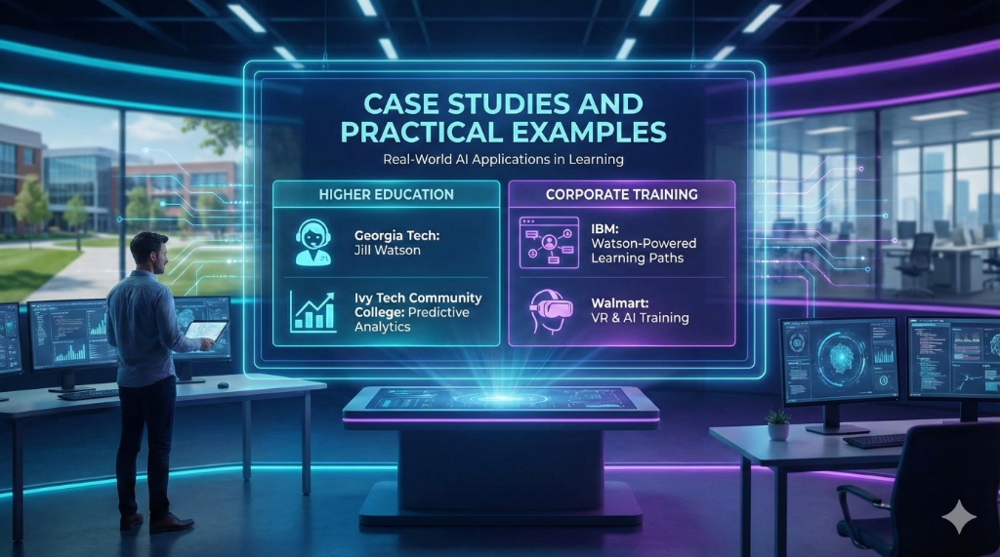

Case Studies and Practical Examples
In Chapter 3, we explored the augmented ADDIE model. To understand the true power of AI-powered instructional design, we must look beyond the tools and frameworks to the real-world impact. This chapter highlights how organizations in corporate, higher education, and K-12 are using AI to solve complex learning challenges.
1. Higher Education: The Rise of the AI Teaching Assistant
Georgia Institute of Technology: "Jill Watson"
In one of the most famous examples of AI in education, Georgia Tech implemented an AI teaching assistant named "Jill Watson" (Georgia Tech, 2024).
- The Challenge: Online forums for computer science courses were overwhelmed with thousands of repetitive student queries.
- The Solution: An AI agent trained on previous forum data was deployed to answer routine questions about assignments and deadlines.
- The Result: Students were often unable to distinguish Jill from human TAs. She answered questions with high accuracy, allowing human instructors to focus on deeper pedagogical discussions.
[!NOTE] Learning Architect’s Perspective: The ID’s role shifted from answering FAQs to knowledge engineering—structuring the data and feedback loops that Jill required to stay accurate.
Lessons Learned: * Data Freshness: Jill's accuracy depended entirely on the quality and recency of the course syllabus and previous forum data. * The Confidence Threshold: A critical improvement was implementing a threshold where Jill would flag a question for a human TA if her confidence score dropped below 97%. * Transparency: While students initially didn't know Jill was an AI, Georgia Tech found that being transparent about AI assistance actually increased student trust in the system's speed.
2. Corporate Training: Personalization at Scale
IBM: Watson-Powered Learning Paths
IBM uses its Watson AI platform to manage the continuous upskilling of hundreds of thousands of employees (IBM, 2024).
- The Challenge: A "one-size-fits-all" training approach was inefficient for a workforce with highly diverse technical skills.
- The Solution: An AI-driven learning marketplace that maps individual employee skills, career goals, and historical performance to a personalized curriculum.
- The Result: Significant increase in relevant skill acquisition and a reduction in "time-to-competency" for new hires.
[!NOTE] Learning Architect’s Perspective: IDs at IBM became Data Strategists, designing the skill taxonomies that allowed the AI to make accurate recommendations.
Lessons Learned: * Taxonomy is King: The AI's recommendations were only as good as the underlying "skills taxonomy." IDs had to spend months defining what "Expertise" looked like in a standardized way. * The Engagement Gap: Personalization alone wasn't enough; IBM found that social learning (connecting with human mentors) still needed to be integrated into the AI-recommended path.
Walmart: VR and AI for Procedural Training
Walmart combined Virtual Reality (VR) with AI to train frontline associates (Walmart, 2024).
- The Challenge: Training employees on complex, high-pressure tasks (like "Black Friday" management) is difficult in a classroom.
- The Solution: Immersive VR simulations where AI actors respond dynamically to trainee decisions.
- The Result: A measurable 70% improvement in test scores and a massive reduction in training time for procedural work.
Lessons Learned: * Hardware Friction: While effective, the initial rollout faced challenges with hardware maintenance and some trainees experiencing motion sickness. * Beyond the Goggles: Walmart improved outcomes by moving to an "open ecosystem," allowing some VR content to be accessed via mobile for reinforcement without the headset.
Global Tech Co: RAG-Powered Compliance Training (2025)
A Fortune 500 company moved beyond general LLMs to a Retrieval-Augmented Generation (RAG) system for its 2025 Ethics and Compliance rollout.
- The Challenge: Standard AI chatbots often hallucinated legal advice or referenced the laws of the wrong country.
- The Solution: IDs built a RAG pipeline that restricted the AI’s "brain" to the company’s specific legal repository.
- The Result: A 98% reduction in "hallucination" errors and the ability for learners to ask complex, local-specific questions with verified accuracy.
3. Specialized Learning: Accessibility and Engagement
K-12 Education: AI for Literacy and Language
In many K-12 environments, AI is being used to bridge the literacy gap. Tools that provide real-time, personalized feedback on reading pronunciation and comprehension are helping students at all levels (Miao & Mishra, 2025).
Global Impact: Bolton College (UK)
Bolton College's "Ada" bot serves as a 24/7 personal assistant for students, handling everything from campus navigation to course-specific tutoring. This international example shows how AI can support the entire student lifecycle, not just the content (Bolton College, 2024).
Accessibility: Inclusive Design by Default
AI is a game-changer for accessibility. * Vision Support: Tools like "Be My Eyes" (integrated with GPT-4) allow learners with visual impairments to get real-time, descriptive audio of complex diagrams. * Neurodiversity: AI-powered text simplifiers help learners with dyslexia or cognitive processing challenges by instantly converting dense academic text into Grade 8 reading level summaries without losing the core concepts.
Lessons from the Quality Gate: When AI Fails
Case studies often focus on success, but the "Human Quality Gate" exists because AI fails. During a 2025 pilot for a medical training module, the AI-generated distractor (wrong answer) for a pharmacology quiz was actually clinically correct in a rare edge case.
- The Failure: The AI focused on "plausibility" rather than "pedagogical intent."
- The Human Intervention: A human SME caught the error during the QA phase.
- The Fix: The prompt was updated to include a Constraint: "Ensure all distractors are factually incorrect under all clinical circumstances."
Critical Analysis: What Can We Learn?
Across these diverse case studies, three themes emerge:
- Scaling Human Expertise: AI doesn't replace the SME; it amplifies their reach (as seen with Jill Watson).
- Personalization is Performance: Tailoring the path to the individual leads to faster and deeper mastery (IBM).
- Accuracy through Architecture: Using RAG and human-in-the-loop QA ensures that "speed" doesn't come at the cost of "safety."
Reflection Exercise: Case Study Analysis
Goal: Analyze a failure to prevent it in your own work.
- Scenario: Review the "Lessons from the Quality Gate" section above regarding the failed pharmacology quiz.
- Analysis: Why did the AI generate a "plausible but wrong" answer that turned out to be correct? What does this tell you about the limitations of statistical prediction in high-stakes fields like medicine?
- Action: Draft a policy statement for your L&D team regarding the use of AI for generating high-stakes assessment items.
References:
- Bolton College (2024). Transforming Online Learning with AI Video.
- Georgia Institute of Technology (2024). Jill Watson: The AI Teaching Assistant.
- IBM (2024). Personalizing Corporate Learning at Scale with Watson.
- Miao, X. & Mishra, P. K. (2025). Preparing Future-Ready Learners: K12 Skills Shift and GenAI EdTech Innovation Direction.
- Walmart (2024). Immersive AI Training for Frontline Associates.
What’s Next?
The success stories in this chapter often rely on more than just basic chatbots. In Chapter 5: Advanced AI Implementation, we will look "under the hood" at the technologies that make these results possible, including RAG and autonomous AI Agents.